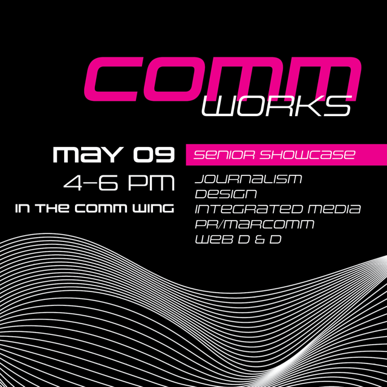
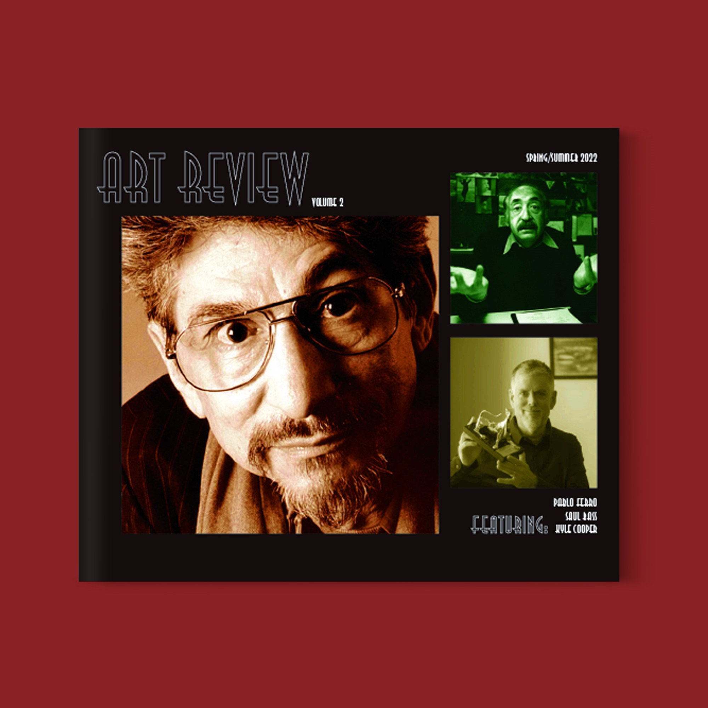
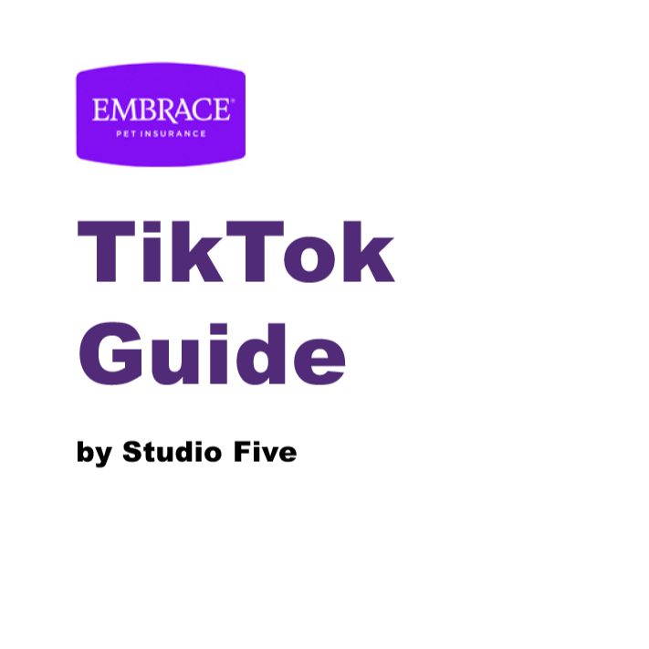
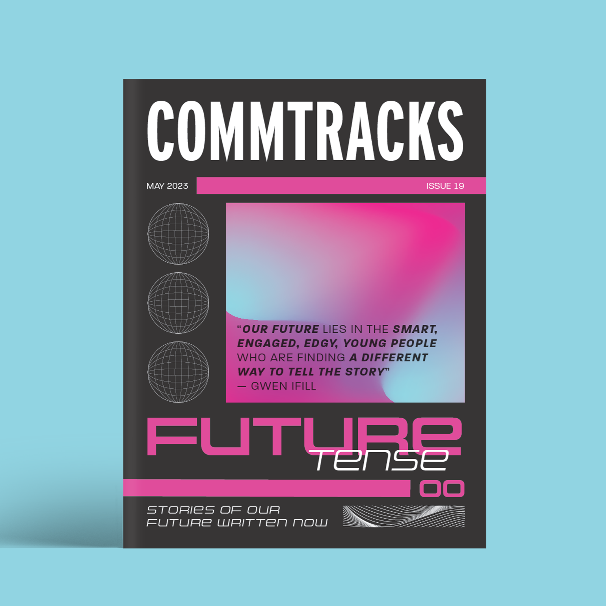
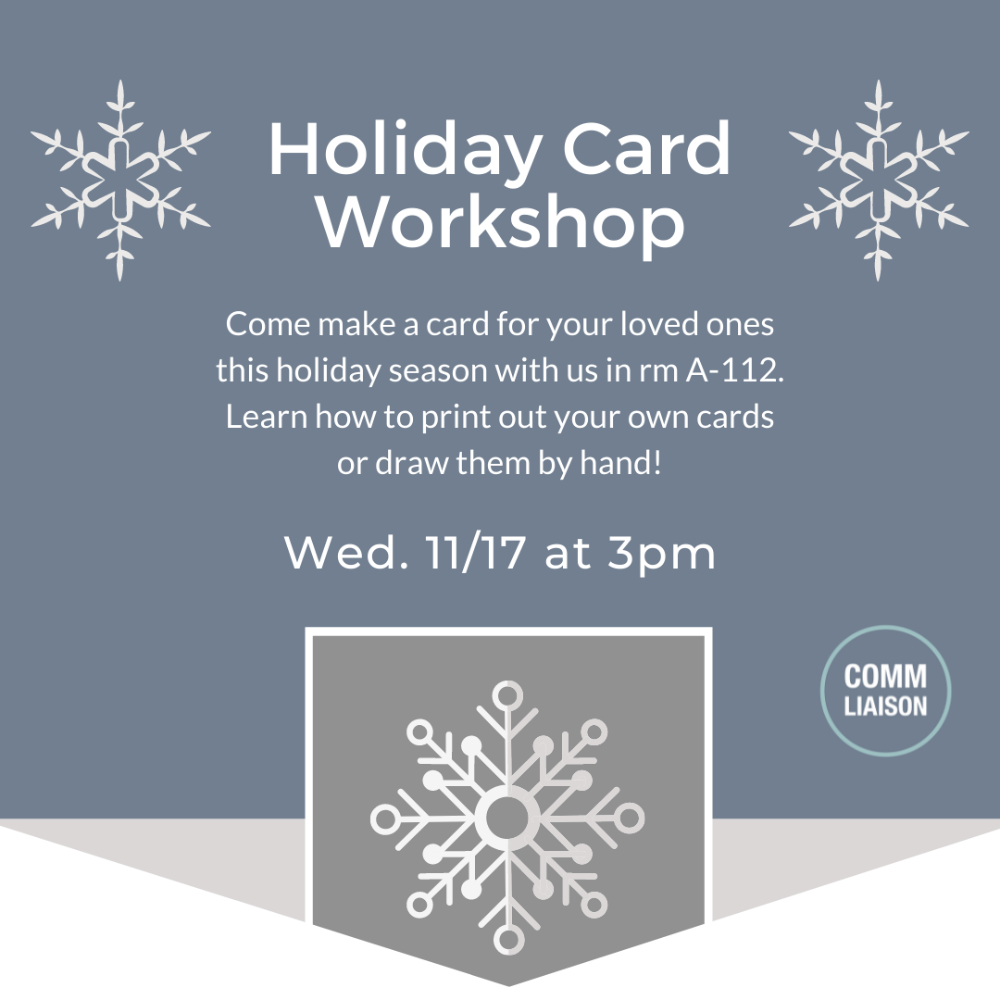
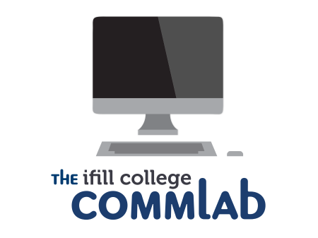
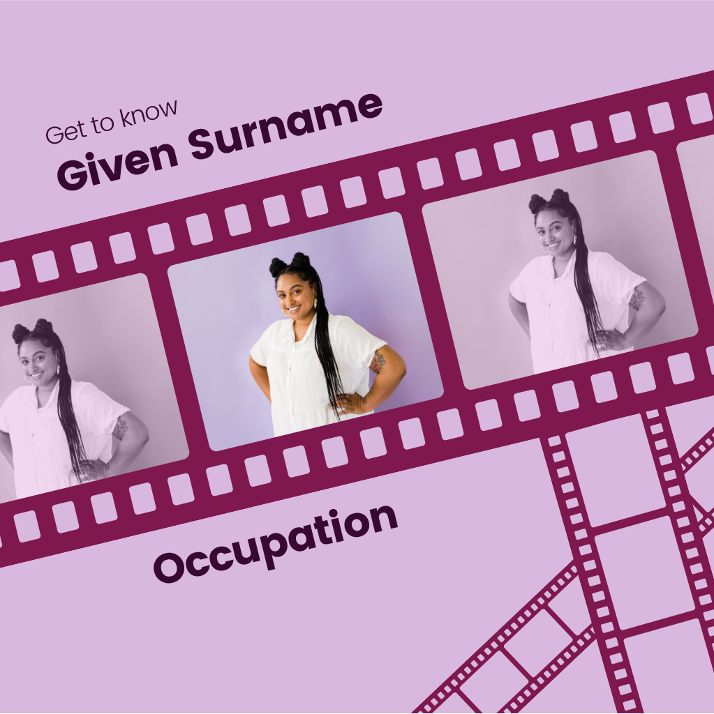
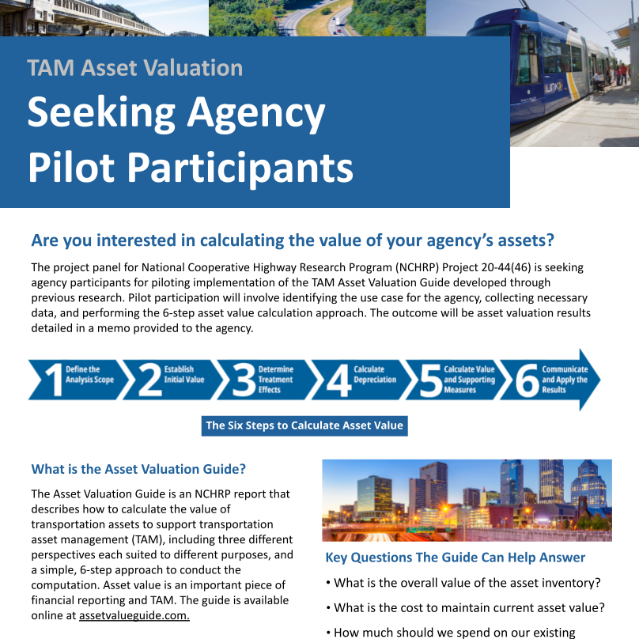

Work

CommWorks Marketing Materials
Senior year, I worked to put on CommWorks, the senior work showcase for the Communications Department. One of my major jobs was to promote the event to people inside and outside the department to attend the important end-of-year event.

Art Magazine
One of our major projects in Advanced Design was to design an art/design magazine inspired by a famous designer. I have always been interested in film and motion graphics so I decided to design my magazine based off the works of award winning graphic designer, Pablo Ferro.

Embrace TikTok Guide
To support Embrace Pet Insurance’s new social media manager, among social media campaigns my team and I designed, I lead the charge in composing a business guide to TikTok.

CommTracks Magazine
CommTracks is Simmons University’s senior magazine. I joined during my second semester to assist the lead designer with spreads and to write an article of my own about AI art.

Comm Liaison Instagram
During my three years as an executive board member of the Communications Liaison, I designed a variety of social media graphics to promote the club’s events.

CommLab Equipment Catalogue
The Ifill College CommLab carries a wide range of equipment available for students taking communications classes so this catalogue was designed to help students be more aware of their resources.

WIFVNE Instagram Template
To help Women in Film & Video New England promote their Annual Meeting of Members fundraiser event and attract new members, my team and I designed a series of social media campaigns.

Pilot Project Support Materials
To support an upcoming asset valuation implementation pilot project, I was assigned to design a variety of visual materials about asset valuation and how it could help public agencies. For the project, I designed a promotional flier, a quick start guide, and a short video about asset valuation.
About Me
My name is Zoe Zeballos. I am a multimedia designer with a background in graphic and web design based in New Hampshire. I’m a recent graduate of Simmons University where I studied media arts and web design.
My main specialties lie in print, but I also have experience in designing for the web and social media. I love creating type layouts the most.